PASA \jyear2026
تنقيح تقدير الكتلة لمرشح الثقب الأسود متوسط الكتلة في NGC 3319
الملخص
أدت أرصاد حديثة في الأشعة السينية أجراها Jiang وآخرون إلى التعرف على نواة مجرية نشطة (AGN) في المجرة الحلزونية عديمة الانتفاخ NGC 3319، الواقعة على بعد Mpc فقط، وتشير إلى وجود ثقب أسود متوسط الكتلة (IMBH; ) إذا كانت نسب إدنغتون مرتفعة بقدر 3 إلى . وسعيًا إلى تنقيح كتلة الثقب الأسود لهذه الفئة النادرة (حاليًا) من الأجرام، استكشفنا علاقات تحجيم متعددة لكتلة الثقب الأسود، مثل تلك التي تتضمن تشتت السرعات (غير المستخدم سابقًا)، وزاوية ميل الذراع الحلزونية اللوغاريتمية، والكتلة النجمية الكلية للمجرة، وكتلة العنقود النجمي النووي، والسرعة الدورانية، ولون NGC 3319، للحصول على عشرة تقديرات للكتلة متفاوتة الدقة. حسبنا كتلة قدرها ، مع ثقة مقدارها 84% بأنها ، استنادًا إلى دالة كثافة الاحتمال المجمعة من سبعة من هذه التقديرات الفردية. وقد استبعد نهجنا المحافظ تقديرين لكتلة الثقب الأسود (عبر كتلة العنقود النجمي النووي، والمستوى الأساسي لنشاط الثقب الأسود — الذي لا ينطبق إلا على الثقوب السوداء ذات معدلات التراكم المنخفضة) كانا حدين علويين بقيمة ، كما لم يستخدم تنبؤ علاقة – البالغ . يوفر هذا الهدف فرصة استثنائية لدراسة ثقب أسود متوسط الكتلة في طور نواة مجرية نشطة، ولتطوير معرفتنا السكانية بالثقوب السوداء. علاوة على ذلك، نقدم طريقتنا الجديدة في التحليل البعدي بوصفها تقنية مفيدة لتحديد مرشحين جدد للثقوب السوداء متوسطة الكتلة من خلال تكميم احتمال امتلاك مجرة ما ثقبًا أسود متوسط الكتلة.
doi:
10.1017/pas.2026.xxxkeywords:
فيزياء الثقوب السوداء – المجرات: نشطة – المجرات: التطور – المجرات: مفردة: NGC 3319 – المجرات: حلزونية – المجرات: البنيةمخطوطة أصلية غير محررة، مقبولة للنشر في PASA، أيار/مايو 7، 2021.
1 مقدمة
توجد فئة مفقودة إلى حد كبير من الثقوب السوداء متوسطة الكتلة (IMBHs) ذات كتل أعلى من تلك التي تكونها النجوم المفردة المستقرة اليوم ()، وأقل كتلة من الثقوب السوداء فائقة الكتلة (SMBHs; )11 1 يزعم أن الجسم المركزي الضخم في الكوازار TON 618 يحتوي على أضخم ثقب أسود بكتلة ، مقدرة من خط انبعاث H ومعامل فيريالي بقيمة 5.5 (Shemmer:2004; Onken:2004). المعروف أنها تقيم في مراكز المجرات الضخمة. وليس من المستغرب أن يكون الفلكيون في أنحاء العالم قد سعوا بحماسة منذ بعض الوقت وراء الاكتشاف المرتقب بشدة للثقوب السوداء متوسطة الكتلة (مثلًا Miller:2004). وبالإضافة إلى توفير مدخل أساسي لجرد الكون الذي نعيش فيه، فإن وفرة الثقوب السوداء متوسطة الكتلة، أو ندرتها، لها تبعات على تشكل الثقوب السوداء فائقة الكتلة في الكون (Graham:2016c; Mezcua:2017; Koliopanos:2017b; Inayoshi:2019; Sahu:2019).
حتى الآن لا يوجد إجماع حول كيفية نشوء الثقوب السوداء فائقة الكتلة. فبينما كشف الامتداد المرصود لنشاط الكوازارات عبر تاريخ كوننا أن تراكم الباريونات زاد كتلها (مثلًا Soltan:1982; Shankar:2004)، فإننا لا نعرف ما كانت عليه كتل ميلادها (أو نطاقها المحتمل). وقد افترضت بعض النظريات أن كتل ميلادها أو «بذورها» كانت ، وبذلك وفرت دفعة أولية لتفسير التكون المبكر للنوى المجرية النشطة العالية (AGN) ذات كتل ثقوب سوداء كبيرة حول (مثلًا Mortlock:2011; Yang:2020; Mignoli:2020). وقد شملت النظريات ثقوبًا سوداء بدائية (مثلًا Grobov:2011)، ونجومًا ضخمة خالية من المعادن من الجمهرة الثالثة تنهار لاحقًا (أو تتصادم، مثلًا Seguel:2019) لتكوّن ثقوبًا سوداء ضخمة (مثلًا Madau:2001; Schneider:2002)، أو الانهيار المباشر لسحب غازية ضخمة، بما يتجاوز عمليًا الطور النجمي من التطور (مثلًا Bromm:2003; Mayer:2010).
نشأ اقتراح البذور الضخمة من الفكرة القائلة إن «حد إدنغتون» (Eddington:1925) لتراكم الغاز على ثقب أسود يعني أن الثقوب السوداء ذات الكتلة النجمية لم يكن لديها وقت كاف لتنمو إلى الثقوب السوداء فائقة الكتلة المرصودة في النوى المجرية النشطة الفتية وعالية الانزياح الأحمر. لكن حد إدنغتون لمعدل التراكم لا ينطبق إلا على شروط كروية (غير واقعية) (Nayakshin:2012; Alexander:2014) ويمكن تجاوزه بدرجة كبيرة في الأنظمة الحقيقية. فعلى سبيل المثال، يمكن أن تحدث تدفقات تراكم فوق حرجة (فوق إدنغتونية) نحو الثقوب السوداء الضخمة عندما يكون تدفق التراكم محصورًا في الغالب في مستوي القرص بينما ينبعث معظم الإشعاع في تدفقات خارجة على امتداد محور الدوران (Abramowicz:1980; Jiang:2014; Pezzulli:2016). ويمكن أن توجد معدلات تراكم فائقة الإدنغتونية في تدفقات تراكم متناظرة كرويًا عندما يخفض نقل الطاقة بالحمل كفاءة الإشعاع (Inayoshi:2016). ومن ثم استدعي إمكان التراكم فوق الحرج لتفسير الوجود المبكر للثقوب السوداء فائقة الكتلة عند انزياحات حمراء عالية (Volonteri:2005; Volonteri:2012; Volonteri:2012b; Volonteri:2015). فضلًا عن ذلك، تفسر معظم مصادر الأشعة السينية فائقة اللمعان حاليًا على أنها ثنائيات أشعة سينية ذات كتل نجمية تتراكم بمعدلات أسرع بكثير من حد إدنغتون الخاص بها (Feng:2011; Kaaret:2017). وهذا التراكم ينفي الحاجة إلى بذور ضخمة للثقوب السوداء.
كان الدافع الإضافي لبدء النوى المجرية النشطة ببذور ضخمة هو أن الثقوب السوداء ذات الكتل المتوسطة بين كتل الثقوب السوداء ذات الكتلة النجمية والثقوب السوداء فائقة الكتلة لم تكن قد رصدت مباشرة، ومن ثم بدت غير موجودة. غير أن ذلك قد يكون تحيزًا في اختيار العينة، لأن كرة التأثير الثقالي حول هذه الثقوب السوداء متوسطة الكتلة، حيث يمكن للمرء أن يرصد مباشرة منحنى دوران كبلريًا، تكون عادة أصغر من أن تفصل مكانيًا. وفوق ذلك، يوجد الآن عدد يتزايد بسرعة من مرشحي الثقوب السوداء متوسطة الكتلة بناءً على تقديرات غير مباشرة لكتلة الثقب الأسود (Farrell:2009; Secrest:2012; Baldassare:2015; Graham:2016b; Baumgardt:2017; Nguyen:2017; Chilingarian:2018; Mezcua:2018; Jiang:2018; Nguyen:2019; Graham:2019a; Graham:2019b; Woo:2019; Lin:2020). إضافة إلى ذلك، يوجد حاليًا خمسة مرشحين لثقوب سوداء متوسطة الكتلة في درب التبانة (Takekawa:2020).
لا يوجد نقص في السيناريوهات التي يمكن أن تنشأ بها فئة واصلة من الثقوب السوداء متوسطة الكتلة. وتشمل المسارات الممكنة الانهيار الجامح «لعناقيد نجمية نووية» كثيفة (Portegies_Zwart:2002; Davies:2011; Lupi:2014; Stone:2017)، ولا سيما إذا كان سحب الغاز والاحتكاك الديناميكي مؤثرين في مركز مجرة ما، أو النمو المغذى بالغاز لثقب أسود ذي كتلة نجمية لم يكن قد ابتلع بعد مادة كافية ليصبح ثقبًا أسود فائق الكتلة (Natarajan:2020). ومن شأن هذه الأفكار أن تضع، على الأقل بعض، الثقوب السوداء متوسطة الكتلة في مراكز المجرات، حيث يمكن تطبيق علاقات تحجيم كتلة الثقب الأسود الراسخة التي تتضمن خاصية ما للمجرة المضيفة.
اكتشفت أرصاد حديثة من مرصد Chandra للأشعة السينية (CXO; Weisskopf:2000) (Soria:2016, انظر أيضًا Chilingarian:2018 وBi:2020) مرشحين لثقوب سوداء متوسطة الكتلة في مراكز22 2 قد تكون بعض مصادر الأشعة السينية غير المركزية التي رصدت ثقوبًا سوداء متوسطة الكتلة أيضًا. وفي الواقع، فإن أفضل مرشح محلي لثقب أسود متوسط الكتلة حتى الآن هو مصدر غير مركزي في المجرة ESO 243-49 (Farrell:2009)، وقد اكتشف نظيره البصري بواسطة Soria:2010، ويعتقد أنه نواة مجرة ساقطة إلى الداخل. غير أن احتمالات كون هذه الأهداف غير المركزية ثقوبًا سوداء متوسطة الكتلة تعد عمومًا أدنى بوضوح من احتمالات الأهداف المركزية — وإن لم تكن معدومة ربما (مثلًا Barrows:2019; Bellovary:2021). في عدة مجرات قريبة منخفضة الكتلة. وقد أتاحت التعريضات الطويلة اكتشاف مصادر نقطية خافتة في الأشعة السينية (متسقة مع ثقوب سوداء منخفضة الكتلة تتراكم عند نسب إدنغتون منخفضة) في مجرات كان متوقعًا أن تستضيف ثقبًا أسود مركزيًا متوسط الكتلة استنادًا إلى تشتت السرعات، واللمعان، وزاوية ميل الذراع الحلزونية لكل مجرة (Koliopanos:2017; Graham:2019a; Graham:2019b). ومن المرجح أن فوتونات الأشعة السينية عالية الطاقة، الصادرة من المراكز غير الميتة تمامًا للمجرات، تأتي من أقراص التراكم حول الثقوب السوداء بسبب طبيعتها كمصادر نقطية، حيث يفضل الانبعاث الثقوب السوداء النشطة بدلًا من تشكل النجوم الممتد مكانيًا.
حددت دراسات عدة مرشحين لثقوب سوداء متوسطة الكتلة في المجرات استنادًا إلى تقدير واحد، أو بضعة تقديرات، لكتلة الثقب الأسود. في هذا العمل اخترنا المجرة NGC 3319، حيث نستطيع تطبيق وفرة من التقديرات المستقلة لكتلة الثقب الأسود. إن NGC 3319 مجرة غنية بالغاز وعديمة الانتفاخ ومتأخرة النمط. وهي مجرة حلزونية قوية القضيب مصنفة SBcd(rs) (RC3)، وقضيبها مصطف مع المحور الرئيسي (Randriamampandry:2015). علاوة على ذلك، يحددها Jiang:2018 على أنها تمتلك نواة مجرية نشطة منخفضة اللمعان ذات معدل تراكم عال تدل عليه نقطة أشعة سينية نووية، ويفترضون كتلة ثقب أسود بين و استنادًا إلى نسبة إدنغتون عالية من 1 إلى ، رغم عدم الكشف في الراديو. وباستخدام تغير الأشعة السينية، أبلغوا عن تقدير قدره 105±2 M⊙، وباستخدام «المستوى الأساسي لنشاط الثقب الأسود»، أبلغوا عن حد أعلى قدره 105 M⊙ في غياب بيانات راديوية. وكان قد سبق التعرف إلى NGC 3319 بوصفها مجرة محتملة ذات منطقة خطوط انبعاث نووية منخفضة التأين (LINER) (Heckman:1980; Pogge:1989)، أو على الأقل كانت تمتلك نواة H ii غير مؤكدة (Ho:1997). وحديثًا صنف Baldi:2018 نوعها النووي على أنه LINER استنادًا إلى تشخيصات مخطط BPT (BPT). ولهذا التصنيف أهمية لأن النوى المجرية النشطة ذات الثقوب السوداء تعد مصادر مشتبهًا بها في تحفيز الانبعاث الطيفي من نوع LINER (Heckman:1980b).
نسعى في هذه الدراسة إلى تضييق قيود كتلة الثقب الأسود متوسط الكتلة المحتمل في نواة NGC 3319 على نحو أفضل عبر تحليل بعدي لتقديرات كتلة متعددة قائمة على كميات مقيسة بصورة مستقلة. وفي الأقسام الفرعية العديدة من القسم 2، نقدم تحليلًا مفصلًا وتطبيقًا لعشر علاقات تحجيم منفصلة لكتلة الثقب الأسود، ثم ندمج هذه التقديرات في النهاية للحصول على تقدير كلي لكتلة الثقب الأسود مع حدود الثقة. ويستخدم عدم اليقين في كل تقدير كتلة لترجيح كل تقدير قبل دمج النتائج، عبر تقنيات إحصائية معيارية، للحصول على تقدير الكتلة النهائي الذي يكون عدم يقينه بطبيعته أصغر من عدم يقين تقديرات الكتلة الفردية. وفي القسم الأخير (القسم 3)، نناقش نتائج بحثنا، ونعلق على تبعاتها، ونشير إلى الفائدة من مواصلة دراسة NGC 3319.
اتباعًا لـJiang:2018، نعتمد مسافة لمعان مستقلة عن الانزياح الأحمر مقدارها Mpc (مسافة نجوم قيفاوية متغيرة من Sakai:1999)، مع مقياس فيزيائي قدره pc arcsec-1. وقد عدلت جميع القيم الواردة في الأدبيات لتلائم المسافة التي نعتمدها إلى NGC 3319. وتمثل كتل الثقوب السوداء () والكتل الأخرى في هذا العمل على هيئة قيم كتلية لوغاريتمية (شمسية)، أي ، حيث إن هي الكتلة بوحدات الكتل الشمسية (M⊙). وتعرض جميع أوجه عدم اليقين على أنها فواصل ثقة (أو جرى تحجيمها إليها). وتعطى جميع المقادير الضوئية في نظام AB (Oke:1974).
2 تقديرات كتلة الثقب الأسود
في الأقسام الفرعية الآتية (2.1–2.10)، طبقنا عشر علاقات تحجيم مختلفة لكتلة الثقب الأسود لتقدير كتلة الثقب الأسود (NGC 3319*) المقيم في مركز NGC 3319. نستخدم أحدث علاقات تحجيم الثقوب السوداء، ومن ثم تكون في بعض الحالات معتمدة على المورفولوجيا. ورغم أن استخدام رسم الصدى كشف أن النوى المجرية النشطة تمد علاقة – إلى كتل ثقوب سوداء تبلغ (Graham:2015)، فإن قلة الثقوب السوداء متوسطة الكتلة المؤكدة (ومن ثم ندرتها في بناء علاقات تحجيم كتلة الثقب الأسود) تلزمنا باستقراء هذه العلاقات للوصول إلى نظام الثقوب السوداء متوسطة الكتلة.33 3 ينطبق ذلك أيضًا على رسم الصدى، الذي يفترض أن معامل (المستخدم لتحويل النواتج الفيريالية إلى كتل فيريالية) يبقى ثابتًا. ومع ذلك نلاحظ أن NGC 205 (Nguyen:2019) وNGC 404 (Nguyen:2017) تمدان الآن العلاقات نزولًا إلى 104 و105 M⊙، على التوالي. وفي القسم 2.11، ندمج تقديرات كتلة الثقب الأسود مع مراعاة مستويات التشتت المختلفة في كل تقدير.
2.1 علاقة –
رصد الجمال الشكلي «للسدم الحلزونية» على مدى 175 سنة، منذ أرصاد Lord Rosse لمجرة Whirlpool (NGC 5194). غير أن ألغازًا مهمة لا تزال قائمة بشأن طبيعة هذه السمات اللافتة وخصائص مجراتها المضيفة (D'Onghia:2013). وقدمت الأعمال الرائدة التي أسست نظرية موجة الكثافة الحلزونية (Lin:1964; Lin:1966; Lin:1969) ربما أوضح تفسير وأطوله بقاء لنشأة البنية الحلزونية (ذات التصميم الكبير). وبالفعل، دعمت الأرصاد نظرية الكثافة الحلزونية في دراسات عديدة (Davis:2015; Pour-Imani:2016; Yu:2018; Peterken:2019; Miller:2019; Vallee:2019; Vallee:2020; Abdeen:2020; Griv:2020; Griv:2021).
وعلى وجه الخصوص، تنبأ Lin:1966 بأن هندسة الأنماط الحلزونية ينبغي أن تحكمها خاصيتان مجريتان أساسيتان: (i) كثافة القرص المجري و(ii) الجهد الثقالي المركزي (الكتلة) للمجرة. وبالتحديد، ينبغي أن تكون زاوية ميل النمط الحلزوني عند مسافة من مركز المجرة متناسبة طرديًا مع كثافة القرص عند وعكسيًا مع كتلة المجرة . اختبر Davis:2015 هذا التنبؤ ووجد علاقة ثلاثية محكمة بين زاوية الميل، وكتلة الانتفاخ النجمي، وكثافة الهيدروجين الذري المتعادل في قرص المجرة. كما أظهرت دراسات إضافية تخص هالات المادة المظلمة ارتباطًا بين زاوية الميل وتركيز الكتلة المركزي، كما يحدده قص منحنى الدوران للمجرة (Seigar:2006; Seigar:2014). وتوفر هذه الدراسات النظرية والرصدية ربما أفضل تفسير لسبب ارتباط زاوية الميل بمجراتها المضيفة: فزاوية الميل مرتبطة بوضوح بالكتلة المركزية للمجرة، التي يعد «القضيب والانتفاخ» والثقب الأسود مكونات متكاملة فيها ومتشابكة عبر التطور المشترك.
تطابق هندسة الحلزونات اللوغاريتمية عن كثب شكل الأذرع الحلزونية في المجرات. وكمّيًا، يحكم شكل الحلزون اللوغاريتمي (إحكام التفافه) القيمة المطلقة لزاوية ميله،44 4 للاطلاع التمهيدي على زاوية الميل، انظر القسم 2 من Davis:2017. ، كما قدمها Pahlen:1911. قدم Seigar:2008 أول دليل على علاقة قوية بين زاوية الميل وكتلة الثقب الأسود المركزي في المجرة الحلزونية. ومع ازدياد حجم عينة المجرات الحلزونية ذات كتل الثقوب السوداء المقيسة مباشرة تدريجيًا عبر السنوات، قدم Berrier:2013 ثم لاحقًا Davis:2017 تنقيحات لعلاقة –. ويرد تمثيل بياني للعلاقة التي وجدها Davis:2017 في الشكل 1.
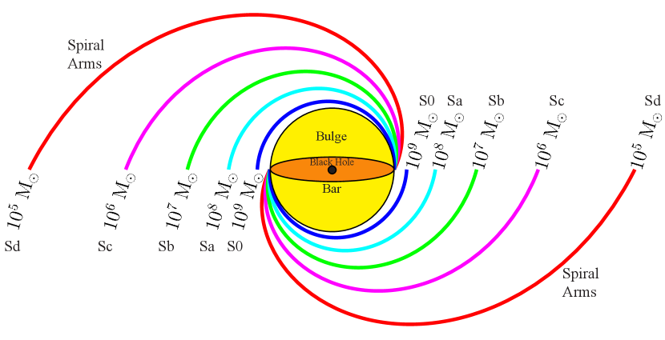
نستخدم المعادلة 8 من Davis:2017 لتحويل زوايا الميل المقيسة إلى كتل ثقوب سوداء، بما في ذلك تشتت داخلي قدره 0.33 dex (مضافًا تربيعيًا مع نشر كامل للأخطاء في قياس زاوية الميل، وكذلك الأخطاء في ميل العلاقة ومقطعها).
لوحظ وجود علاقة – ليس في الأرصاد فحسب (Seigar:2008; Berrier:2013; Davis:2017) بل في المحاكاة أيضًا. فقد قاس Burcin:2018 زوايا الميل لعينة عشوائية من 95 مجرة مستخرجة من محاكاة Illustris (Vogelsberger:2014) واستعاد علاقة – متسقة مع تلك المستخلصة من الدراسات الرصدية. ولذلك فقد حازت علاقة – الناشئة بالفعل دعمًا تجريبيًا ونظريًا (عبر النظرية والمحاكاة) لتصبح علاقة تحجيم كاملة لكتلة الثقب الأسود. وقد انتشر تقدمها في اثني عشر عامًا فقط؛ وينبغي أن تضيف التحسينات المستقبلية في الأرصاد وحجم العينة إلى شرعيتها الراسخة. يستمر البحث عن العلاقة الأولية مع كتلة الثقب الأسود، وغياب نمط حلزوني في المجرات المبكرة النمط يستبعد علاقة –، تمامًا كما ينفي غياب الانتفاخات في بعض المجرات المتأخرة النمط علاقة –. ومع ذلك، فإن المستوى المنخفض من التشتت في كلتا العلاقتين يجعلهما مقدرين قيمين لكتلة الثقب الأسود.
طورت برامج حاسوبية عدة للتعامل مع القياس الكمي لزاوية ميل المجرات الحلزونية. وفي هذا العمل نستخدم ثلاثًا من أبرز الحزم وأكثرها متانة لقياس زاوية الميل: 2dfft (Davis:2012; 2dfft; p2dfft)، وspirality (Shields:2015; spirality)، وsparcfire (sparcfire). يستخدم كل كود طريقة مستقلة لقياس زاوية الميل، ولكل منها ميزته الفريدة.55 5 للاطلاع على مقارنة توضيحية لكل حزمة برمجية، انظر ملحق Davis:2017. يقيس كل روتين زاوية الميل بعد إزالة إسقاط صورة المجرة الأصلية (الشكل 2، اللوحة اليسرى) إلى اتجاه اصطناعي مواجه (الشكل 2، اللوحة الوسطى). نعتمد زاوية موضع الأيزوفوت الخارجي (، درجات شرق الشمال) والإهليلجية () لـ NGC 3319 من Salo:2015: و. وتكافئ هذه الإهليلجية ميل القرص، .
قسنا زوايا الميل من صورة تلسكوب Spitzer الفضائي بكاميرا المصفوفة تحت الحمراء (IRAC) المستحصلة من أرشيف Spitzer التراثي.66 6 https://irsa.ipac.caltech.edu/applications/Spitzer/SHA وقدمت دراسات حديثة (Pour-Imani:2016; Miller:2019) دليلًا رصديًا على أن ضوء 8.0- يبرز الموقع الفيزيائي لموجة الكثافة الحلزونية في المجرات الحلزونية. ويأتي ضوء 8.0- من توهج الغبار الدافئ حول مناطق تشكل النجوم الوليدة التي صدمت إلى الوجود بفعل موجة الكثافة الحلزونية.
2.1.1 sparcfire
يستخدم sparcfire (sparcfire) تقنيات الرؤية الحاسوبية لتحديد عناقيد البكسلات التي تشكل بنية الأذرع الحلزونية في المجرات الحلزونية، ويلائم مقاطع حلزونية لوغاريتمية مع تلك العناقيد. يصنف sparcfire كل حلزون استنادًا إلى كيراليته: Z-wise، أي الحلزونات التي تنمو شعاعيًا في اتجاه عكس عقارب الساعة ()؛ وS-wise، أي الحلزونات التي تنمو شعاعيًا في اتجاه عقارب الساعة (). واستنادًا إلى عدد الحلزونات الملائمة وأطوال أقواسها، اعتمدنا كيرالية مهيمنة للمجرة وتجاهلنا جميع الأقواس الزائفة المطابقة للكيرالية الثانوية. حسبنا زاوية ميل موزونة المتوسط الحسابي للمجرة استنادًا إلى وزن لكل قوس () بحيث ، حيث إن هو طول القوس و هو نصف القطر الداخلي (من الأصل في مركز المجرة) لمقطع قوس فردي. ومن ثم يكون أعلى ترجيح للأقواس الطويلة قرب مركز المجرة، وتصبح مقاطع الأقواس القصيرة، وربما الزائفة، في المنطقة الخارجية من المجرة غير مؤثرة.
كما يظهر في اللوحة اليمنى من الشكل 2، فإن الكيرالية المهيمنة هي Z-wise.
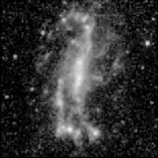
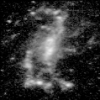
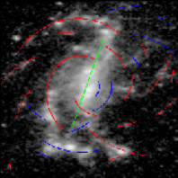
حسبنا زاوية الميل وحولناها إلى تنبؤ بكتلة الثقب الأسود عبر علاقة – كما يأتي،
{IEEEeqnarray}rCl
|ϕ|_sparcfire&=317±45→
M_∙(|ϕ|_sparcfire)=4.15±0.86.
2.1.2 2dfft
إن 2dfft (Davis:2012; 2dfft; p2dfft) حزمة برمجية للتحويل السريع ثنائي الأبعاد لـ فورييه تفكك صورة المجرة إلى حلزونات لوغاريتمية. وتحسب مطال كل مركبة فورييه بتفكيك التوزيع المرصود للضوء في الصورة إلى تراكب من الحلزونات اللوغاريتمية بوصفه دالة في زاوية الميل، ، والنمط التوافقي، ، أي رتبة التناظر الدوراني (مثل تناظرات ثنائية وثلاثية وأعلى رتبة). وللمشهد المواجه لـ NGC 3319 (الشكل 2، اللوحة الوسطى)، يتحقق المطال الأعظمي عند (أي ذراعين حلزونيين) و
| (1) |
2.1.3 spirality
إن spirality (Shields:2015; spirality) برمجية ملاءمة بالقوالب. وبإعطائها صورة مواجهة لمجرة حلزونية، تحسب مكتبة من نظم الإحداثيات الحلزونية ذات زوايا ميل مختلفة. وبالنسبة إلى NGC 3319 (الشكل 2، اللوحة الوسطى)، فإن أفضل نظام إحداثيات حلزوني ملائم له زاوية ميل مقدارها
{IEEEeqnarray}rCl
|ϕ|_spirality&=244±41→
M_∙(|ϕ|_spirality)=5.40±0.74.
2.1.4 زاوية الميل موزونة المتوسط وكتلة الثقب الأسود
علاقة – علاقة محكمة ذات تشتت داخلي منخفض. غير أن ميل العلاقة حاد نسبيًا، ومن ثم فإن تغيرات صغيرة في زاوية الميل تعادل تغيرات كبيرة في كتلة الثقب الأسود. وبالتحديد، يرتبط تغير في زاوية الميل قدره فقط بتغير قدره 1.0 dex في كتلة الثقب الأسود. وبالنسبة إلى المجرات الحلزونية المتأخرة النمط مثل NGC 3319، كثيرًا ما تتسم بنياتها الحلزونية المفتوحة بتلبد فطري ولا تناظرات بين الأذرع الحلزونية الفردية. فضلًا عن ذلك، وبسبب انخفاض الكتل الكلية لهذه المجرات (مقارنة بالمجرات الحلزونية المبكرة النمط)، تكون مضايقة المجرات والتفاعلات المدية أكثر تأثيرًا في تعطيل بنياتها الحلزونية.
متوسط عدم اليقين بين معادلاتنا 2–2.1.3 هو (فرق قدره 0.68 dex في كتلة الثقب الأسود). ومع ذلك فإن جميع قياسات زاوية الميل الثلاثة تمتلك أشرطة خطأ متداخلة. ولإنتاج قياس أكثر متانة لزاوية الميل، نجمع القياسات الثلاثة كلها (المعادلات 2–2.1.3) للحصول على زاوية ميل موزونة المتوسط الحسابي،
| (2) |
وعدم اليقين المصاحب لها،
| (3) |
بوزن لكل قياس يتناسب عكسيًا مع مربع عدم اليقين في قياسه، أي الترجيح بعكس التباين، . وهذا يعطي
| (4) |
يفترض استخدامنا لعلاقات تحجيم كتلة الثقب الأسود المستقلة، وتشتتها المبلغ عنه، توزيعًا طبيعيًا لكل منها. وبافتراض توزيع طبيعي لمتوسطنا الموزون، يمكننا بعد ذلك حساب احتمال امتلاك ثقب أسود متوسط الكتلة. وبالنظر إلى تقدير كتلة لثقب أسود وخطئه المصاحب ()، يمكننا حساب احتمال أن يكون الثقب الأسود دون فائق الكتلة () كما يأتي،
| (5) |
(Weisstein:2002). وبفعل ذلك لتقدير الكتلة من المعادلة (4)، نجد . وقد تحققنا أيضًا من زاوية الميل في تصوير بديل يتتبع كذلك تشكل النجوم في الأذرع الحلزونية، باستخدام نطاق الأشعة فوق البنفسجية البعيدة (FUV) في Galaxy Evolution Explorer (GALEX) (1350–1750 Å). وجدنا أن زاوية الميل من تصوير GALEX FUV، ، متسقة بدرجة عالية مع تلك المستقاة من تصوير 8.0-.
2.2 علاقة –
استخدمنا في تقديرنا الثاني الكتلة النجمية الكلية لـ NGC 3319 بوصفها متنبئًا بكتلة الثقب الأسود في مركزها. بدأنا بالحصول على صور وأقنعة Spitzer لـ NGC 3319 من فهرس S4G (Sheth:2010).77 7 https://irsa.ipac.caltech.edu/data/SPITZER/S4G/index.html واخترنا استخدام الصورة النجمية من Querejeta:2015. وقد أنشئت صورة بعد تحديد مقدار الغبار المتوهج الموجود (بتحليل الصورتين التجريبيتين و) ثم طرح ضوء الغبار من صورة . وبذلك لا تعرض صورة إلا الضوء المنبعث من السكان النجميين، ويمكن تحويل لمعانها مباشرة إلى كتلة نجمية. اعتمدنا نسبة كتلة إلى ضوء نجمية ، هي من Meidt:2014،88 8 لنطاق عدم يقين منخفض في نسبة الكتلة النجمية إلى الضوء، مع من 0.40 إلى 0.55 (Schombert:2019). وهذا متسق مع قيمة المرصودة (أي مع توهج الغبار) التي اشتقها Davis:2019، وهي مكافئة لقيمة المصححة من الغبار عند Meidt:2014. إلى جانب مقدار مطلق شمسي mag (AB)، عند (Oh:2008).
لنمذجة الضوء من NGC 3319، استخدمنا روتيني البرمجيات isofit وcmodel لملاءمة الأيزوفوتات ونمذجتها (Ciambur:2015)، على التوالي. وبعد حجب مصادر الضوء الدخيلة، شغلنا isofit على صورة (الشكل 3، اللوحة اليسرى) واستخدمنا cmodel لاستخراج المجرة وإنشاء تمثيل لها (الشكل 3، اللوحة الثانية). ويمكن رؤية جودة الاستخراج في الصور المتبقية المعروضة في اللوحتين اليمنيين من الشكل 3.
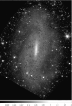
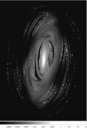
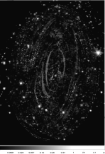
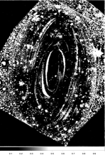
ثم حللت المجرة المستخرجة بواسطة برمجية ملاءمة ملف السطوع السطحي profiler (Ciambur:2016). ويعمل ذلك بلف نموذج المجرة مع دالة انتشار النقطة (PSF) الخاصة بـ Spitzer (قناة IRAC 1)، ذات عرض كامل عند نصف القيمة العظمى (FWHM) قدره للمهمة المبردة99 9 https://irsa.ipac.caltech.edu/data/SPITZER/docs/irac/iracinstrumenthandbook/5/ حتى تتحقق مطابقة مثلى.1010 10 يستخدم profiler خوارزمية Levenberg-Marquardt للمربعات الصغرى غير الموزونة (Marquardt:1963) (عبر حزمة python lmfit; Newville:2016) لتصغير التشتت الكلي rms، ، بين السطوعات السطحية للبيانات (المستحصلة من isofit) والنموذج، كل منها عند خانة شعاعية، ، حيث إن هو عدد الخانات الشعاعية (شاملًا) بين نصفي القطر الأدنى () والأقصى () اللذين يختارهما المستخدم، و هو عدد المعاملات الحرة (أي عدد المكونات التي يختارها المستخدم)؛ ويعدل profiler النموذج (مجموع المكونات التي يختارها المستخدم) حتى بلوغ حد أدنى شامل. وإضافة إلى ذلك، يقدم ملف متبق، ، في مخططات خرج profiler لإظهار جودة الملاءمة بدلالة نصف القطر المجري المركزي (). نعرض ملفات السطوع السطحي الناتجة للمجرة والملاءمات متعددة المكونات لكل من المحور الرئيسي (الشكل 4، اللوحتان اليسريان) ومحور المتوسط الهندسي، المكافئ لتمثيل مدور للمجرة (الشكل 4، اللوحتان اليمنيان).
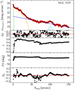
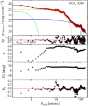
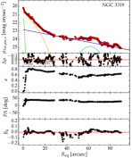
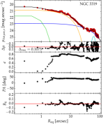
نؤكد أن NGC 3319 مجرة عديمة الانتفاخ ولا تتطلب مكون انتفاخ Sérsic تقليديًا (Sersic:1963; Ciotti:1991; Graham:2005). وبدلًا من ذلك ننتج ملاءمة مقنعة تلتقط على نحو كاف كل ضوء المجرة (مع تشتت كلي rms قدره mag) باستخدام خمسة مكونات: قضيب Ferrers (Ferrers:1877)؛ وقرص أسي؛ ومكونين غاوسيين لالتقاط عبور الأذرع الحلزونية للمحور الرئيسي؛ ومصدر نقطي في المركز. نحسب مقدارًا ظاهريًا كليًا متكاملًا قدره mag (AB). وتدرج مقادير المكونات الإضافية في الجدول 1. واستنادًا إلى مسافتها ( Mpc)، نحدد مقدارًا مطلقًا قدره mag للمجرة عند . ويؤدي تطبيق (Meidt:2014) و mag (AB) إلى كتلة نجمية كلية لوغاريتمية قدرها (قارن Georgiev:2016, ) لـ NGC 3319.
| Component | |||
|---|---|---|---|
| (mag) | (mag) | (dex) | |
| (1) | (2) | (3) | (4) |
| PSF (NC) | |||
| Bar | |||
| Disk | |||
| Inner Spiral | |||
| Outer Spiral | |||
| Total |
اكتشف Savorgnan:2016 تسلسلًا أحمر وآخر أزرق متميزين للمجرات المبكرة والمتأخرة النمط في مخطط –، مكونًا تنقيحًا لتسلسل core-Sérsic (المجرات العملاقة المبكرة النمط) وتسلسل Sérsic (المجرات الحلزونية والمجرات المبكرة النمط منخفضة الكتلة) من Graham:2012، وGraham:2013، وScott:2013. وأظهر Bosch:2016 لاحقًا هذا الانفصال مع مجرات إضافية، وإن كان ذلك بكتل ثقوب سوداء أقل موثوقية، بينما صاغه Terrazas:2016 بدلالة معدل تشكل النجوم. هنا نطبق أحدث علاقة أنشئت للمجرات الحلزونية ذات كتل الثقوب السوداء المقيسة مباشرة. وبتطبيق المعادلة 3 (مع ) من Davis:2018، تتنبأ هذه الكتلة النجمية الكلية للمجرة بكتلة ثقب أسود مركزية كما يأتي،
| (6) |
مع .
كما يتضح في الصور ومن ملف الإهليلجية، لا مجال للبس في أن NGC 3319 تمتلك قضيبًا قويًا يستأثر بمعظم الضوء من المنطقة الداخلية (2.1 kpc) من المجرة. ولا يوجد دليل واضح على مكون انتفاخ (كروي)؛ ومن ثم تعد NGC 3319 مجرة عديمة الانتفاخ. وحتى إذا وصف المرء القضيب خطأ بأنه انتفاخ كاذب، فإن كتلة «انتفاخه» اللوغاريتمية لن تكون إلا (انظر الجدول 1). وإذا طبقت على علاقة – من Davis:2019، فإن ذلك سيظل يتنبأ براحة بثقب أسود متوسط الكتلة قدره ، مع .
2.3 علاقة –
من تفكيكنا لملف السطوع السطحي لـ NGC 3319، استخرجنا مقدارًا ظاهريًا لمصدر نقطي مركزي قدره ، منتجًا مقدارًا مطلقًا قدره . سنفترض أن هذا اللمعان يعود إلى العنقود النووي (NC) من النجوم. وبالطبع سيأتي بعض إسهام التدفق من النواة المجرية النشطة. لذلك نقدر حدًا أعلى لكتلة العنقود النجمي النووي باستخدام و mag (AB)، لنحصل على . ونعد هذا تقديرًا معقولًا لأنه يقع بين التقديرات الحديثة (Georgiev:2014; Georgiev:2016) و (Jiang:2018)، وكلاهما من تصوير تلسكوب Hubble الفضائي لـ NGC 3319.
باستخدام علاقة – الجديدة لدى Graham:2019d،1111
11
انظر أيضًا Graham:2016 والمعادلة 12 من Graham:2019b. المعطاة بـ
{IEEEeqnarray}rCl
M_∙(M_NC,⋆)=&(2.62±0.42)log(
M
NC,⋆
10
7.83
M
⊙
)+
(8.22±0.20),
ومع تشتت داخلي قدره 1.31 dex. غير أننا، بسبب تلوث النواة المجرية النشطة، نتعامل مع هذا بوصفه تقدير حد أعلى لكتلة الثقب الأسود. لذلك نتنبأ بكتلة الثقب الأسود الآتية،
| (7) |
مع .
2.4 علاقة –
من HyperLeda1212 12 http://leda.univ-lyon1.fr/ (Paturel:2003)، اعتمدنا سرعتهم الدورانية العظمى الظاهرية للغاز، (قيمة مجانسة مشتقة من 24 قياسات مستقلة)، وهي السرعة الدورانية العظمى المرصودة غير المصححة لتأثير الميل. ثم حولنا ذلك إلى سرعة دوران فيزيائية عظمى مصححة للميل () عبر
| (8) |
يعطي تطبيق المعادلة 10 من Davis:2019b
| (9) |
مع .
2.5 علاقة –
حصلنا على تشتت السرعات النجمي المركزي من Ho:2009 واستخدمنا المعادلة 2 من Sahu:2019b للتنبؤ بكتلة الثقب الأسود كما يأتي،
| (10) |
مع . هذا التقدير لكتلة الثقب الأسود هو الأعلى بين كل تقديراتنا؛ وهو تقدير الكتلة المنفصل الوحيد لدينا لـ NGC 3319* مع .
قدم Ho:2009 فهرسًا لتشتتات سرعات موجودة سابقًا، رصدت في وقت ما بين 1982 و1990 (Ho:1995). وكانت القياسات تشتتات موزونة المتوسط من الجانبين الأزرق والأحمر لجهاز Double Spectrograph (Oke:1982) المركب في بؤرة Cassegrain لتلسكوب Hale ذي 5.08 m في مرصد Palomar. غير أن Ho:2009 وجد أن الاستبانة الطيفية للجانب الأزرق غير كافية لقياس التشتتات على نحو موثوق لمعظم المجرات المتأخرة النمط في عينتهم، كما كان الحال لـ NGC 3319. ولم يقدم Ho:2009 إلا تشتت سرعة للجانب الأحمر لـ NGC 3319. علاوة على ذلك، لاحظ Ho:1995 أنه في أرصادهم لـ NGC 3319 «قد يكون شكل المتصل في طيفها غير مؤكد بسبب تصحيح غير كامل لتغيرات التركيز المكانية».
وعلى الرغم من أن Jiang:2018 يعرضون طيفًا لـ NGC 3319 (انظر شكلهم 5) من مسح Sloan الرقمي للسماء (SDSS)، فإنهم لا يوردون تشتت السرعات. وينص إصدار البيانات 12 من SDSS (Alam:2015)1313 13 https://www.sdss.org/dr12/algorithms/redshifts/ على أن «قيم تشتت السرعة الأفضل ملاءمة 100 km s-1 تقع دون حد الاستبانة لمطياف SDSS وينبغي التعامل معها بحذر». ومع ذلك حاولنا قياس تشتت السرعات من طيف SDSS (الشكل 5) ووجدنا (نظرًا إلى حد الاستبانة المذكور، فمن المحتمل أن يكون ذلك حدًا أعلى)، وإن كان مع تقدير متباين لسرعتها الابتعادية. وجدنا ، وهو مختلف بوضوح عن قيمة SDSS ()، أو حتى عن متوسط السرعة الشعاعية مركزية الشمس من HyperLeda (). ورغم أن km s-1، ولذلك فهو مثير للارتياب، فإن قياسنا متسق مع القيمة من (Ho:1995). وينبغي أن توفر استبانة طيفية أفضل وضوحًا أكبر بشأن تشتت السرعات في هذه المجرة، والذي قد يتأثر أيضًا بالعنقود النجمي النووي.
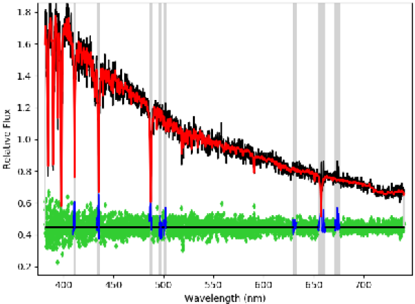
2.6 علاقة –
درس Mayers:2018 عينة من 30 نواة مجرية نشطة (، ، و)، مع كتل ثقوب سوداء مقدرة عبر Bentz:2015، وأبلغ عن اتجاه بين كتلة الثقب الأسود ولمعان الأشعة السينية. ومن أرصاد 2-10 keV بواسطة CXO للمصدر النقطي النووي في NGC 3319، حسب Jiang:2018 لمعانًا قدره . طبقنا علاقة – لدى Mayers:2018،
{IEEEeqnarray}rCl
M_∙(L_2-10 keV) = &(0.58±0.05)log(
L
2-10 keV
2×10
43
erg s
-1
)+
(7.46±0.34),
مع تشتت قدره 0.89 dex، بحيث إن
{IEEEeqnarray}rCl
L_2-10 keV&=10^39.0±0.1 erg s^-1→
M_∙(L_2-10 keV)=4.97±0.98,
مع . غير أنه بالنظر إلى أن نسبة إدنغتون ستتغير مع الزمن، إذ تشغل دورة عمل النواة المجرية النشطة النواة وتطفئها، فمن غير المرجح أن يكون هذا تقدير كتلة مستقرًا.1414
14
وجد Woo:2002 أن نسبة إدنغتون لثقب أسود معين يمكن أن تتغير، ممتدة على نطاق يصل إلى ثلاثة رتب قدرية. ولكي تكون علاقة مستقرة، ستتطلب علاقة – أن يشبه التوزيع المتغير زمنيًا لنسب إدنغتون لثقب أسود معين توزيعًا طبيعيًا؛ وقد وجدت دراسات عدة دليلًا داعمًا لتوزيع ذي قمة (Kollmeier:2006; Steinhardt:2010; Lusso:2012). ويمكن للمستوى الأساسي لنشاط الثقب الأسود (القسم 2.9) أن يقدم بصيرة إضافية، مع موازنته من الانبعاث الراديوي المتزايد والمتناقص.1515
15
رغم أن تغير الأشعة السينية غير المطابق (في الراديو) (عادة ليس أكثر من عامل 3؛ Timlin:2020) يمكن أن يسهم ربما في تشتت العلاقة.
2.7 علاقة –
من المنحنيات الضوئية التي حصلت عليها أرصاد CXO، قدر Jiang:2018 تغير الأشعة السينية، ممثلًا بالتباين الفائض المطبع () على (10 ks). ووجدوا . وبتطبيق علاقة – من Pan:2015، حصل Jiang:2018 على
| (11) |
مع . ومن الواضح أنه مع تقدير علوي 1 لكتلة الثقب الأسود قدره 107 M⊙، فإن هذا وحده ليس دليلًا على ثقب أسود متوسط الكتلة.
2.8 نسبة إدنغتون
استنادًا إلى توزيع الطاقة الطيفي الوسيط (SED) للكوازارات الهادئة راديويًا لدى Elvis:1994، حدد Jiang:2018 لمعانًا بولومتريًا قدره لـ NGC 3319*، وذلك بتحجيم SED إلى لمعان CXO () وتكامل SED بكامله. وباستخدام أرصاد XMM-Newton وCXO لـ NGC 3319*، حدد Jiang:2018 أيضًا دليل فوتونات الأشعة السينية الصلبة بقيمة . واتباعًا لـJiang:2018، حولنا ذلك إلى نسبة إدنغتون، ، مع لمعان إدنغتون، ، عبر المعادلة 2 من Shemmer:2008. لذلك فإن .
من هذه النقطة في الحساب، اختار Jiang:2018 اعتباطيًا ، مما يعني . وهكذا وسع Jiang:2018 تقدير الكتلة إلى نطاق من إلى لنسب إدنغتون اعتباطية تمتد من 1 إلى ، أي نطاق قدره 3 dex. ولأغراضنا، سنبقى مع المحسوبة مع ، لكننا سنتبع نطاق عدم اليقين المحافظ 3 dex لدى Jiang:2018 بتوسيع تقديرنا إلى
| (12) |
مع .
2.9 المستوى الأساسي لنشاط الثقب الأسود
حصل Baldi:2018 على صور راديوية عالية الاستبانة () عند 1.5 GHz لنواة NGC 3319، لكنه أخفق في كشف مصدر؛ وبذلك وضع حدًا أعلى للمعان، .1616
16
قدم Baldi:2018 لـ NGC 3319، استنادًا إلى مسافتهم المعتمدة 11.5 Mpc. ويمكن تطبيق هذا اللمعان الراديوي على المستوى الأساسي لنشاط الثقب الأسود (Merloni:2003; Falcke:2004; Gultekin:2009; Plotkin:2012; Dong:2015; Liu:2016; Nisbet:2016)، الذي يبين ارتباطًا تجريبيًا بين انبعاث الأشعة السينية المتصل، والانبعاث الراديوي، وكتلة ثقب أسود متراكم. وينطبق هذا المستوى الأساسي على الثقوب السوداء فائقة الكتلة وكذلك الثقوب السوداء ذات الكتلة النجمية؛ ومن ثم ينبغي أن يكون مناسبًا أيضًا للفئة المتوسطة من الثقوب السوداء متوسطة الكتلة (مثلًا Gultekin:2014). وباستخدام المستوى الأساسي لنشاط الثقب الأسود، أبلغ Jiang:2018 عن تقدير لكتلة الثقب الأسود قدره . غير أن لمعان 5 GHz عادة هو المستخدم في علاقة المستوى الأساسي، وليس لمعان 1.5 GHz الذي لدينا. لذلك نتبع تحويل كثافة التدفق الإشعاعي، ، لدى Qian:2018 باعتماد بوصفه الدليل الطيفي الراديوي النموذجي للنوى المجرية النشطة اللامعة (ذات نسبة إدنغتون العالية). وبذلك يتنبأ هذا بلمعان مصاحب عند 5 GHz قدره . وباستخدام هذه القيمة مع (القسم 2.6)، طبقنا علاقة Gultekin:2019 للتنبؤ بالحد الأعلى الآتي لكتلة الثقب الأسود،
{IEEEeqnarray}rCl
L_FP&≡(L_2-10 keV,L_5 GHz)
= (10^39.0±0.1,≤10^34.77±0.05) erg s^-1→
M_∙(L_FP)≤5.62±1.05,
مع .1717
17
نظرًا إلى الصلة بين تقديري كتلة الثقب الأسود من نسبة إدنغتون (المعادلة 12) والمستوى الأساسي (المعادلة 16)، نتحقق أيضًا من أن الأول ( و) متسق مع عدم الكشف الراديوي (). وباستخدام المعادلة 19 من Gultekin:2019، مع اللمعان الراديوي بوصفه المتغير التابع في انحدارهم، نجد . ومن ثم فإن التنبؤ العكسي متسق مع عدم الكشف الراديوي.
غير أن مسألتين تجعلان هذا التنبؤ بعينه إشكاليًا. الأولى أن البيانات الراديوية وبيانات الأشعة السينية لم تحصل في الوقت نفسه، وأن المقياس الزمني لتغيرات التدفق سيكون قصيرًا للثقوب السوداء متوسطة الكتلة لأنه يتناسب مع حجم «أفق الحدث» ومن ثم مع كتلة الثقب الأسود. أما المسألة الثانية فهي أن «المستوى الأساسي لنشاط الثقب الأسود» ينطبق على الثقوب السوداء ذات معدلات التراكم المنخفضة (Merloni:2003, فقرتهم الأخيرة من القسم 6)، وتعد NGC 3319* ذات معدل تراكم عال (Jiang:2018, انظر قسمهم 3.2). لذلك لا ندرج هذا التقدير في اشتقاقنا لكتلة الثقب الأسود.
2.10 علاقة –
يعرض Dullo:2020 علاقة بين كتلة الثقب الأسود ولون UV لمجرته المضيفة1818
18
انظر أيضًا اعتماد كتلة الثقب الأسود على لون مجرته المضيفة كما قدمه Zasov:2013. من دراستهم لـ 67 مجرة ذات كتل ثقوب سوداء مقيسة مباشرة. ومن الجدول D1 في Dullo:2020، فإن كتلة الثقب الأسود المتنبأ بها لـ NGC 3319* هي ، استنادًا إلى لون FUV الخاص بها ().1919
19
يزود Dullo:2020 أيضًا علاقة –، لكن بالنظر إلى التشابه مع علاقة –، نفضل استخدام علاقة FUV بسبب عدم اليقين الأصغر في الميل والمقطع. غير أننا نستطيع تنقيح هذا التنبؤ أكثر بمراعاة الإخماد الغباري الداخلي في NGC 3319. وبما أن NGC 3319 عديمة الانتفاخ، فإننا نتعامل معها على أنها قرص بالكامل. وباستخدام الميل الذي نعتمده، ، وتطبيق المعادلتين 2 و4 من Dullo:2020، نجد أن هذه التصحيحات تجعل NGC 3319 أسطع بمقدار mag في الأشعة فوق البنفسجية، وأسطع بمقدار mag عند .2020
20
نلاحظ التحفظ المتمثل في أن علاقات Dullo:2020 مبنية على مقادير الانتفاخ زائد القرص، لا على مقادير المجرة الكلية. وفي المقابل، تشتق الألوان من Bouquin:2018، التي استخدمت للتنبؤ بكتل الثقوب السوداء في الجدول D1 لدى Dullo:2020، من مقادير مقاربة قد تشمل تدفقات إضافية من القضبان والحلقات والمكونات النووية. وبالنسبة إلى NGC 3319، نفترض أن للقضيب والقرص اللون نفسه ويتطلبان التصحيح الغباري نفسه لأن القضبان ليست إلا الأجزاء الداخلية من الأقراص التي غيرت مداراتها. ومن ثم سيكون تغير اللون أكثر زرقة بمقدار mag، مما يحدث لون FUV من Bouquin:2018 إلى mag مصححًا من الغبار الداخلي. وباستخدام علاقة – بطريقة BCES bisector (BCES) للمجرات المتأخرة النمط ذات ميل من الجدول 2 في Dullo:2020، نحصل على كتلة ثقب أسود أصغر بمقدار dex مما أبلغ عنه في الجدول D1. ويخفض هذا التنقيح التقدير المجدول من إلى . ومن ثم،
{IEEEeqnarray}rCl
C_FUV,tot&=1.16±0.14 mag→
M_∙(C_FUV,tot)=4.83±0.87,
مع .
2.11 دالة كثافة الاحتمال
مع هذا العدد الكبير من تقديرات الكتلة والتردد في منح الثقة لقياس واحد وحده، جمعنا تقديرات الكتلة المذكورة آنفًا (باستثناء التقدير من المعادلة 2.6) للحصول على تقدير واحد لكتلة الثقب الأسود لـ NGC 3319*. وقد فعلنا ذلك بتحليل دالة كثافة الاحتمال (PDF) لتوزيع تقديرات الكتلة (انظر الشكل 6). وبالنسبة إلى تقديرات كتلة الثقب الأسود السبعة المختارة لدينا (المعادلات 4، 6، 9، 10، 11، 12، و20)، جعلنا توزيعًا طبيعيًا يمثل كل تقدير بمتوسطاته () وانحرافاته المعيارية () الخاصة. ثم جمعنا الغاوسيات السبع معًا لإنتاج مجموع مركب. ولضمان أن تكون مساحة المجموع مساوية لواحد، قسمنا كل حد غاوسي من الحدود السبعة على سبعة بحيث تساوي المساحة تحت كل غاوسي .
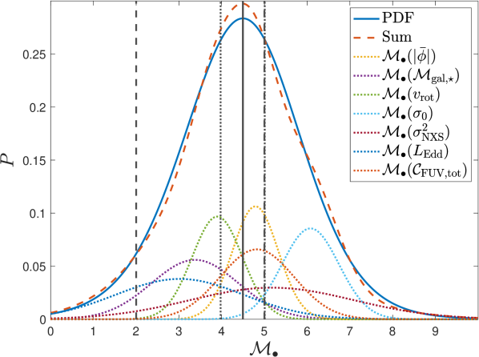
\hdashrule[0.35ex]8mm1pt1mm = \hdashrule[0.35ex]8mm1pt1pt + \hdashrule[0.35ex]8mm1pt1pt + \hdashrule[0.35ex]8mm1pt1pt + \hdashrule[0.35ex]8mm1pt1pt + \hdashrule[0.35ex]8mm1pt1pt + \hdashrule[0.35ex]8mm1pt1pt + \hdashrule[0.35ex]8mm1pt1pt. يشير الخط العمودي المتصل (\hdashrule[0.35ex]8mm0.4mm) إلى موضع
. وتحدد الخطوط العمودية المنقطة (\hdashrule[0.35ex]8mm1pt1pt) (يسارًا) و (يمينًا، متداخلة مع الخط المتقطع). وتحدد الخطوط العمودية المتقطعة (\hdashrule[0.35ex]8mm1pt1mm) تعريفَي الحد الأعلى والحد الأدنى لكتلة ثقب أسود متوسط الكتلة.
لائمنا توزيعًا طبيعيًا ملتوًا ومتفطحًا مع المجموع، وقسنا كتلة الثقب الأسود عند القمة (النمط) في PDF على أنها
| (13) |
حيث إن هي كتلة الثقب الأسود عندما يبلغ الاحتمال () قيمته العظمى (). ونكمم خطأه المعياري على أنه
{IEEEeqnarray}rCl
δ^+
^
M
_∙&≡
RWHM
2Nln2
= 0.51 و
δ^-
^
M
_∙≡
LWHM
2Nln2
= 0.52,
مع العرض الأيمن عند نصف العظمى dex، والعرض الأيسر عند نصف العظمى dex، وعدد المتنبئات ، و. وللمقارنة الكاملة بين جميع تقديرات الكتلة، انظر الجدول 2 والشكل 7.
| Predictor | ||
|---|---|---|
| (dex) | (%) | |
| (1) | (2) | (3) |
| 65 | ||
| 94 | ||
| 63 | ||
| 97 | ||
| 5 | ||
| 51 | ||
| 46 | ||
| 91 | ||
| 28 | ||
| mag | 58 | |
| 84 | ||
| † Excluded from the black hole mass PDF. | ||
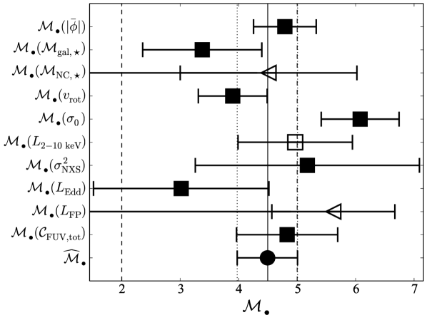
3 مناقشة
قدمنا تقديرات متعددة للكتلة لـ NGC 3319*، ثمانية منها تقديرات منفصلة واثنان حدان علويان (القسمان 2.3 و2.9). إن عدم كشف مصدر نووي في الأرصاد الراديوية يضع حدًا أعلى هو بالفعل أعلى من معظم تقديرات الكتلة الأخرى لدينا. ويستدعي هذا الكشف الراديوي المفقود أرصادًا راديوية مستقبلية عميقة وعالية الاستبانة المكانية (مع أرصاد أشعة سينية متزامنة) لتقديم تقدير كتلة محسن لـ NGC 3319* عبر المستوى الأساسي لنشاط الثقب الأسود. ومع ذلك، فإن تقدير الحد الأعلى للكتلة من المستوى الأساسي لنشاط الثقب الأسود (المعادلة 16) متفق مع تقدير كتلتنا الآخر المشتق من قياسات الأشعة السينية (المعادلة 2.6).
من بين تقديرات الكتلة العديدة لدينا، ربما تكون علاقة تحجيم كتلة الثقب الأسود الأشهر (–) هي التي تنتج أعلى تقدير للكتلة. وبالفعل، تقدم المعادلة (10) تقدير الكتلة الوحيد غير المتسق مع . وسيكون من المهم الحصول على قياس ذي استبانة طيفية عالية مناسبة لـ في NGC 3319 لتأكيد القياس الوحيد الذي أصبح عمره الآن على الأقل 31 سنة أو مراجعته. ومع ذلك، ليس من غير المسبوق العثور على ثقب أسود ناقص الكتلة على نحو شاذ بالنسبة إلى علاقة – (Zaw:2020).
استخدمنا أحدث تنقيح لعلاقة – بواسطة Sahu:2019b لتقدير كتلة الثقب الأسود. وبناءً على Davis:2017، حدد Sahu:2019b أن من تحليل 46 مجرات حلزونية ذات قياسات لتشتت السرعات المركزي وكتل ثقوب سوداء مقيسة مباشرة. غير أنه لا توجد أي من هذه المجرات لها كتل ثقوب سوداء أدنى من km s-1 (). وقد كشف Sahu:2019b عن ميل المجرات ذات تشتتات السرعات المركزية الأقل من 100 km s-1 إلى الوقوع فوق علاقة – المعرفة بالمجرات ذات تشتتات السرعات الأعلى وكتل الثقوب السوداء المقيسة مباشرة (أي الحركيات المفصولة مكانيًا، لا رسم الصدى ولا الأطياف أحادية الحقبة المقترنة بمعامل فيريالي ثابت). لذلك، إذا كان تشتت السرعات في NGC 3319 أقل من km s-1، فستكون هناك حاجة إلى علاقة – أقل انحدارًا من المستخدمة هنا.
أظهر Baldassare:2020 أن استقراءات علاقة – الضحلة الخاصة بـ «الانتفاخات الكلاسيكية» من Kormendy:2013 تبدو صالحة (ربما ظاهريًا) نزولًا إلى كتل ثقوب سوداء قدرها ، مع تقديرات لكتلة الثقب الأسود مشتقة من كتل طيفية أحادية الحقبة (فيريالية؛ مع افتراض معامل لحساب هندسة منطقة الخطوط العريضة المجهولة). وإذا استبعدنا تقدير الكتلة من علاقة – تمامًا، فإن تقديرنا لكتلة الثقب الأسود في NGC 3319* (المعادلة 13) يصبح ، مع ، استنادًا إلى القياسات المنفصلة الستة الباقية المستخدمة في الشكل 6. وإضافة إلى ذلك، إذا تعاملنا مع تقدير حد كتلة العنقود النجمي النووي الأعلى كتقدير منفصل، فإننا نصل إلى ، كذلك مع . وهذا مبني مرة أخرى على سبعة قياسات، لكن مع استبعاد تقديري علاقتي – و– الآن، وكذلك تقدير المستوى الأساسي.
3.1 التشابه مع الثقب الأسود متوسط الكتلة في LEDA 87300
أعلن عن مرشح الثقب الأسود متوسط الكتلة في LEDA 87300 (RGG 118) بوصفه «الأصغر» المبلغ عنه في نواة مجرية2121 21 أول مرشح قوي لثقب أسود متوسط الكتلة هو مصدر نقطي غير مركزي فائق اللمعان في الأشعة السينية، شديد السطوع إلى درجة لا يمكن معها أن يكون ثقبًا أسود متراكمًا ذا كتلة نجمية (Farrell:2009). (Baldassare:2015; Baldassare:2017; Graham:2016b). نعتمد الانزياح الأحمر نفسه () كما في Graham:2016b، لكننا نستدعي بدلًا من ذلك أحدث المعاملات الكوزموغرافية ( km s-1 Mpc-1، و، و) من Planck:2018 لحساب مسافة تدفق هابل (الشعاعية المرافقة) البالغة Mpc (Wright:2006). وينتج هذا التعديل كتلة للثقب الأسود متوسط الكتلة (LEDA 87300*) في LEDA 87300، كما حددها Graham:2016b، مع . واستند ذلك إلى معامل فيريالي قدره 2.8 (Graham:2011) وإلى افتراض أن علاقة – للنوى المجرية النشطة والمجرات الساكنة يمكن استقراؤها دون M⊙. وبذلك فإن كتلتي NGC 3319* وLEDA 87300* شبه متطابقتين، و، على التوالي. غير أنه بالنظر إلى أشرطة الخطأ المتداخلة المرتبطة بكل من الثقبين الأسودين، فإن أفضل ما نستطيع استنتاجه في الوقت الراهن هو أن كتلتيهما قد تكونان متشابهتين.
3.2 البيئة والتطور الداخلي البطيء
إن NGC 3319 مجرة معزولة نسبيًا ضمن مجموعة من أربع مجرات: NGC 3104، و3184، و3198، و3319 (Tully:1988). ومن المرجح أن أقرب جارة لها حاليًا هي NGC 3198. تقع NGC 3198 على مسافة () منا قدرها Mpc (مسافة نجوم قيفاوية متغيرة من Kelson:1999)، وبمطالع مستقيم J2000 () قدره ، وميل J2000 () قدره ، بينما تقع NGC 3319 عند Mpc، و، و. واستنادًا إلى الإحداثيات الكروية مركزية الشمس لكل مجرة، تكون المسافة الفيزيائية بين المجرتين
{IEEEeqnarray}rCl
∥
→
d_1
-
→
d_2
∥ &≡
d_1^2+d_2^2-2d_1d_2cos(α_1-α_2)
-
2d_1d_2sinα_1sinα_2[cos(δ_1-δ_2)-1]
.
ومن ثم فإن الفصل الفيزيائي بين NGC 3198 وNGC 3319 هو Mpc.
مع هذا المستوى من العزلة، من المرجح أن تمر NGC 3319 بعدة مليارات من السنين من الهدوء النسبي، من دون اندماجات مجرية مهمة. وإذا كان الأمر كذلك، فينبغي أن تواصل NGC 3319* تطورها المشترك مع مجرتها المضيفة عبر التراكم والتغذية الراجعة الداخليين البطيئين. ولا يوجد دليل قاطع على أن NGC 3319 شهدت اندماجًا كبيرًا حديثًا. غير أننا نلاحظ أن Moore:1998 كشفوا نظامًا صغيرًا ()، على بعد فقط ( kpc) جنوب NGC 3319. ويفترض Moore:1998 أن التفاعلات المدية بين هذا الجسم وNGC 3319 تفسر على الأرجح البنية الحلزونية المشوهة، وذيل H i، واضطرابات السرعة في النصف الجنوبي من المجرة.
3.3 القياسات المباشرة لـ NGC 3319*
يعتقد أن الثقوب السوداء البقايا النجمية توجد بين حد Tolman-Oppenheimer-Volkoff البالغ للنجوم النيوترونية الباردة غير الدوارة (Tolman:1939; Oppenheimer:1939; Margalit:2017; Shibata:2017; Ruiz:2018; Rezzolla:2018) و60– من انهيار النجوم الضخمة المقدر من النماذج التطورية (Belczynski:2010; Woosley:2017; Spera:2017). وقد وجدت أرصاد حديثة أقل ثقب أسود معروف كتلة (؛ Thompson:2019).2222 22 انظر أيضًا مرشح الثقب الأسود الحديث (Jayasinghe:2021). وعلى مدى العامين الماضيين، اكتشفت ثقوب سوداء تبدأ بتجاوز تعريف الكتلة المنخفضة للثقوب السوداء متوسطة الكتلة: (Abbott:2019) و M⊙ (Zackay:2019). وتتسق إشارة الموجات الثقالية GW190521 (LIGO:2020) مع إنشاء ثقب أسود متوسط الكتلة بكتلة M⊙ بفعل تصادم ثقوب سوداء. وتزداد خصائصه وتبعاته الفيزيائية الفلكية (LIGO:2020b) لفتًا بالنظر إلى الثقة العالية بأن واحدًا على الأقل من أسلافه يقع في فجوة الكتلة التي تتنبأ بها نظرية المستعرات العظمى لانعدام الاستقرار الزوجي (Woosley:2017).2323 23 بدلًا من ذلك، يقترح Roupas:2019 أن الثقوب السوداء بين 50 و135 يمكن أن تتكون عبر تراكم غازي سريع في عناقيد بدائية كثيفة.
إن المجرة الإهليلجية القزمة NGC 205 (M110)، وهي تابع لمجرة المرأة المسلسلة (M31)، هي حاليًا أقل ثقب أسود نووي كتلة قيس بالطرق المباشرة. وقد قدر Nguyen:2019 كتلة ثقب أسود قدرها عبر النمذجة الديناميكية النجمية. وفوق ذلك، يبدو أن هذه المجرة تؤكد استقراء علاقات التحجيم إلى نظام الثقوب السوداء متوسطة الكتلة. وعلى نحو صريح، فإن كتلة ثقبها الأسود متسقة مع تنبؤ علاقة –، ، (Sahu:2019b, المعادلة 1) مع من HyperLeda.
لكي نقدر كتلة NGC 3319* ديناميكيًا، لا بد من فصل الحركات داخل كرة تأثيرها (SOI). ووفقًا لـPeebles:1972، فإن كرة التأثير الثقالية لثقب أسود مقيم في مركز مجرة لها نصف قطر،
| (14) |
استنادًا إلى تشتت سرعاته (العالي على نحو مشكوك فيه؛ المعادلة 10)، وتقدير كتلة ثقبه الأسود (المعادلة 13)، ومسافته، نحصل على لـ NGC 3319*.2424 24 لأننا نشكك في قيمة العالية والمتباينة من المعادلة 10، يمكننا بدلًا من ذلك استخدام تنبؤ الكتلة (الذي لا يأخذ المعادلة 10 في الحسبان) للتنبؤ بـ من علاقة –. وبعكس العلاقة من Sahu:2019b، نجد أن . وباستخدام هذه القيمة الآن بدلًا من المرصودة، تعطي المعادلة 14 لـ NGC 3319*.
إن مصفوفة أتاكاما الكبيرة المليمترية (ALMA) مفيدة في سبر النوى الغازية للمجرات، بما في ذلك الحلقات المحيطة بالنواة من الغاز الجزيئي، الدوارة وذات الشكل الطوري، التي تتيح قياسات كتلة الثقب الأسود المركزي (مثلًا Garcia-Burillo:2014; Yoon:2017; Combes:2019; Davis:2020). ولدى ALMA حاليًا استبانة مكانية FWHM مبهرة قدرها 20 mas عند 230 GHz. وقد حققت شبكة VLBI شرق الآسيوية (EAVN؛ انظر Wajima:2016; Hada:2017; An:2018) استبانة مكانية قدرها 0.55 mas (550 as) عند 22 GHz. ويمكن توقع استبانة مشابهة على مقياس ملي ثانية قوسية من مصفوفة الخط القاعدي الطويل (LBA؛ Edwards:2015) والشبكة الأوروبية للتداخل ذي الخط القاعدي الطويل (EVN؛ مثلًا Radcliffe:2018). ويمكن لمصفوفة الخط القاعدي الطويل جدًا (VLBA) على الأرجح فصل SOI لـ NGC 3319*، باستبانتها المكانية 0.12 mas (120 as) باستخدام أطول خط قاعدي لها عند 3 mm، وهو حاليًا بين Mauna Kea، Hawaii وNorth Liberty، Iowa.2525 25 https://science.nrao.edu/facilities/vlba/docs/manuals/oss/ang-res ويمكن لتلسكوب أفق الحدث (EHT) أيضًا فصل SOI لـ NGC 3319*، مع FWHM لدالة PSF قدره 20 as. وتمكن EHT من فصل حلقة الانبعاث، التي تظهر أفق الحدث، المحيطة بالثقب الأسود فائق الكتلة M87* بقطر (EHT).
نظرًا إلى صعوبة الحصول على قياس مباشر لكتلة NGC 3319*، سيكون من الحصافة دراسة النواة المجرية النشطة في NGC 3319 أولًا عبر طرائق رسم الصدى (RM). وفي هذا الصدد، تعد المجرة الحلزونية عديمة الانتفاخ NGC 4395 النموذج الأولي. وتمتلك NGC 4395 واحدًا من أقل الثقوب السوداء النووية كتلة التي قيست على الإطلاق بطرائق مباشرة. وحصل Brok:2015 على تقدير لكتلة الثقب الأسود قدره عبر نمذجة ديناميكية الغاز؛ وحصل Brum:2019 بالمثل على عبر حركيات الغاز. وسبقت هذه القياسات المباشرة تقديرات مفيدة لكتلة الثقب الأسود برسم الصدى مقدارها (Peterson:2005) و (Edri:2012, انظر أيضًا Cho:2020 وBurke:2020). وبالمثل، يمكن أن تستفيد NGC 3319* كثيرًا من مزيد من الدراسة عبر حملات رسم الصدى، أو على الأقل من تقديرات كتلة بأطياف أحادية الحقبة.
3.4 الآثار
إن وفرة الثقوب السوداء في مجال الكتلة الجديد هذا للثقوب السوداء متوسطة الكتلة، أو ندرتها، لها طيف واسع من الآثار. وتشمل هذه ما يأتي:
-
•
استخدام النوى المجرية النشطة منخفضة الكتلة لمد علاقات تحجيم الثقوب السوداء للتنبؤ بكتل الثقوب السوداء في المجرات ذات الثقوب السوداء الساكنة منخفضة الكتلة.
-
•
ستمكن الثقوب السوداء متوسطة الكتلة من تنقيح إضافي لمخططات – و– (مثلًا Davis:2018; Davis:2019; Sahu:2019)، مما يسهل أكثر تقدم نظريات التطور المشترك بين الثقوب السوداء والمجرات (مثلًا Kauffmann:2000; Croton:2006; Schaye:2015).
-
•
إنشاء دالة كتلة الثقوب السوداء من النجوم إلى الثقوب السوداء فائقة الكتلة، ثم مراجعة كثافة كتلة الثقوب السوداء في الكون إذا ثبت أن الثقوب السوداء متوسطة الكتلة وفيرة (Aller:2002; Graham:2007; Shankar:2009; Davis:2014; Mutlu-Pakdil:2016).
-
•
زيادة فهم تراكم بناء المجرات في كوننا الهرمي عبر أحداث الاندماج، بما في ذلك اندماجات الثقوب السوداء متوسطة الكتلة؛ والبحث عن كثافات معدلات اندماج ثنائيات الثقوب السوداء متوسطة الكتلة وتقييدها (Salemi:2019; Jani:2019).
-
•
صلات مع العناقيد النجمية النووية والمجرات القزمة فائقة الانضغاط (Graham:2009; Neumayer:2012; Georgiev:2016; Nguyen:2018; Graham:2019d; Neumayer:2020) وتنبؤات برصود موجات ثقالية فضائية تتضمن إشعاعًا ثقاليًا بأطوال موجية أطول مما تستطيع المقاييس التداخلية الأرضية كشفه (Portegies_Zwart:2007; Mapelli:2012; Fragione:2020). وسيكون للمرصد الفضائي المرتقب بشدة Laser Interferometer Space Antenna (LISA؛ LISA:2017) متطلب رصدي مصمم لكشف التحام ثنائيات ثقوب سوداء غير متساوية الكتلة ذات كتلة ذاتية كلية – عند . وينبغي أن تلتحم مثل هذه الثقوب السوداء (المشابهة لـ NGC 3319*)، وكل منها مدمج في عنقوده النجمي النووي، خلال زمن هابل بسبب الاحتكاك الديناميكي (Ogiya:2019). وينبغي أن تتمكن LISA والجيل التالي من مراصد الموجات الثقالية أيضًا من العثور على ثقوب سوداء متوسطة الكتلة في العناقيد الكروية لدرب التبانة والحجم المحلي (Arca-Sedda:2020).
-
•
يمكن للتمزيق المدي العنيف لنجوم الأقزام البيضاء بواسطة الثقوب السوداء متوسطة الكتلة أن يطلق مستعرات عظمى غنية بالكالسيوم، محفزًا التخليق النووي لعناصر مجموعة الحديد، كما يمكنه توليد طاقات كهرومغناطيسية وموجات ثقالية قابلة للرصد (Rees:1988; Haas:2012; MacLeod:2016; Andreoni:2017; Andreoni:2019; Kuns:2019; Anninos:2019; Malyali:2019).
تمثل الثقوب السوداء متوسطة الكتلة الحلقة المفقودة الضرورية لملء الفراغ في معرفتنا السكانية بالثقوب السوداء، ولربط فهمنا النظري غير الكافي للتطور المشترك بين الثقوب السوداء والمجرات، والتغذية الراجعة، ونمو أضخم الثقوب السوداء في الكون. وتعد الدراسة المستقبلية المتزايدة لـ NGC 3319* بالحصول على تأكيد مباشر لوجود ثقب أسود متوسط الكتلة في طور نواة مجرية نشطة، وبإتاحة تقدم علمي فوري ودائم.
شكر وتقدير
نشكر Jonah S. Gannon، الذي قدم خبرة قيمة في التحليل الطيفي. وتشكر BLD David Nelson على إتاحة مكتبه المنعزل خلال جائحة COVID-19. دعم هذا البحث مخطط التمويل DP17012923 التابع لمجلس البحوث الأسترالي. وأجريت أجزاء من هذا البحث بواسطة مركز التميز لاكتشاف الموجات الثقالية التابع لمجلس البحوث الأسترالي (OzGrav)، عبر المشروع رقم CE170100004. تستند هذه المادة إلى عمل مدعوم من Tamkeen ضمن منحة معهد الأبحاث في جامعة نيويورك أبوظبي CAP3. وقد استخدم هذا البحث نظام بيانات الفيزياء الفلكية التابع لـ NASA، وقاعدة بيانات NASA/IPAC خارج المجرية (NED) وأرشيف العلوم تحت الحمراء (IRSA). ونقر باستخدام قاعدة بيانات HyperLeda (http://leda.univ-lyon1.fr). كما استخدمنا أداة التصور DS9 (Joye:2003)، وهي جزء من برنامج مركز أرشيف علوم الفيزياء الفلكية عالية الطاقة التابع لـ NASA (HEASARC).